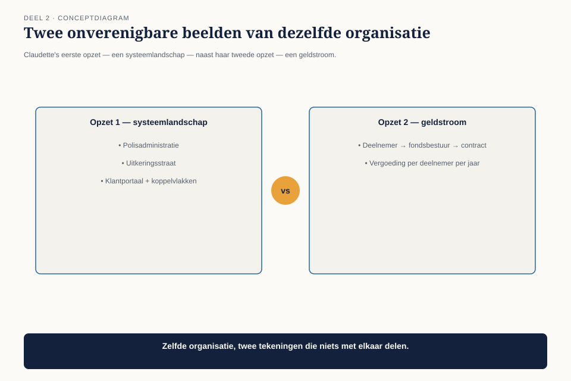
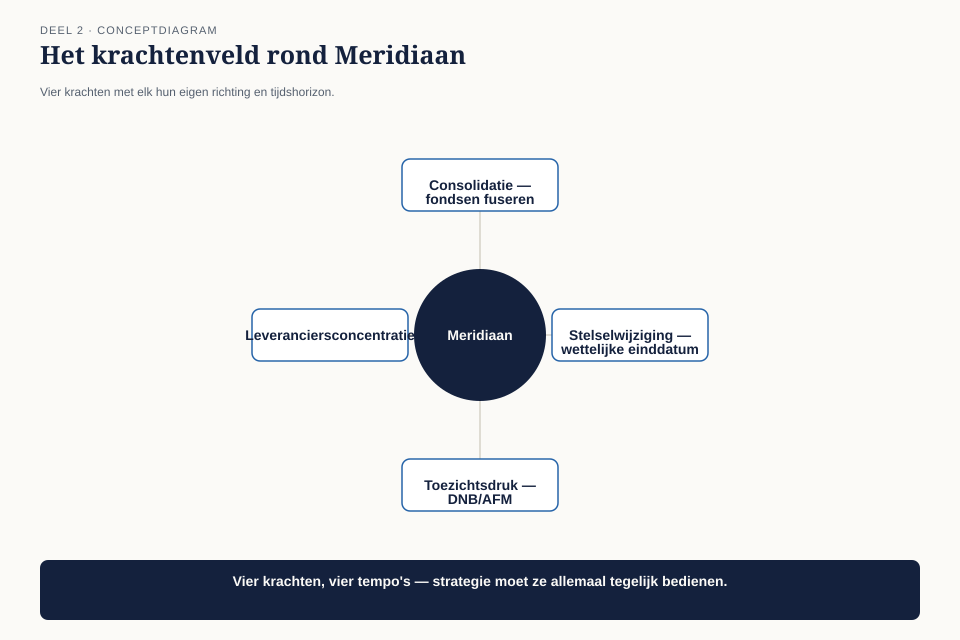
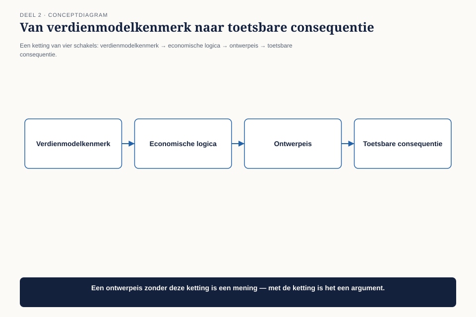

Deel 2 — Business Technology Strategy I
Niveau 1 — De kern | Deelnemersreader BTABoK-cursus, Ductus
2.1 Waar dit deel over gaat
In deel 1 hebben we vastgesteld dat een architect wordt herkend aan wat hij weet en doet. Dit deel gaat over het eerste ding dat hij moet weten, en het is niet een technologie.
Business Technology Strategy is de eerste kernpijler van de BTABoK, en de eerste competentie daarbinnen heet Business Fundamentals. Dat is geen toeval en geen beleefdheidsvolgorde. Alles wat een architect verderop doet — prioriteren, afwegen, adviseren, weigeren — steunt op de vraag die hier wordt beantwoord: waar komt het geld vandaan en waar gaat het heen?
Aan het eind van dit deel kun je:
- het verdienmodel van je eigen organisatie in vijf minuten uitleggen aan iemand die er niet werkt;
- benoemen wie in jouw organisatie de klant is, wie de gebruiker en wie de opdrachtgever — en waarom dat drie verschillende partijen kunnen zijn;
- de eenheid bepalen waarin jouw organisatie waarde meet, en die eenheid gebruiken om technologievoorstellen te prioriteren;
- een sectoranalyse maken die verder gaat dan “er is veel concurrentie”;
- van minstens drie kenmerken van het verdienmodel de architectuurgevolgen afleiden.
2.2 De opdracht die Claudette krijgt
Na het assessmentgesprek geeft Bart Hoekstra haar een opdracht die ze eerst als een belediging opvat.
“Over drie weken heb je twintig minuten in het MT. Je legt uit hoe Meridiaan geld verdient. Geen slide over systemen. Als je dat kunt, geloof ik de rest ook.”
Claudette’s eerste versie duurt negen minuten en gaat over de polisadministratie, de uitkeringsstraat, het klantportaal en de koppelvlakken daartussen. Ze noemt drie keer het woord “keten”. Bart onderbreekt haar bij minuut zes.

De correctie die hij geeft is de kern van dit deel:
“Je hebt me verteld hoe het werkt. Ik vroeg hoe het betaalt.”
Dit is observatie O2: Claudette kan niet uitleggen hoe Meridiaan geld verdient, welke markt het bedient of waar de vergunning knelt.
2.3 De vier vragen
De BoK beschrijft Business Fundamentals uitgebreid, maar voor de praktijk laat het zich terugbrengen tot vier vragen die je van je eigen organisatie moet kunnen beantwoorden zonder iets op te zoeken.
| Vraag | Wat je ermee kunt | |
|---|---|---|
| 1 | Wie betaalt ons, en waarvoor precies? | je weet welke voorstellen inkomsten raken en welke niet |
| 2 | In welke eenheid meten we dat? | je kunt kosten en baten in dezelfde taal uitdrukken als de directie |
| 3 | Waar zit onze kostenstructuur? | je weet welke besparing merkbaar is en welke ruis |
| 4 | Wat mogen we niet, en van wie niet? | je weet welk voorstel bij voorbaat kansloos is |
Vraag 2 is de belangrijkste en wordt het vaakst overgeslagen. Elke organisatie meet waarde in een eenheid: per transactie, per klant per maand, per behandeling, per geleverd uur, per deelnemer per jaar. Wie die eenheid niet kent, kan geen voorstel doen dat de ontvanger kan wegen. Dat is precies waarom Claudette’s verzoek om budget voor het koppelvlak strandde: “minder risico” is geen eenheid.
2.4 Het verdienmodel als werkvorm
Om die vier vragen systematisch te beantwoorden gebruiken we in deze cursus het verdienmodelblad: één A3 met negen vakken, waarop je het verdienmodel van een organisatie in een uur met vier mensen kunt reconstrueren.
De opzet is niet nieuw — het idee van een businessmodel op één blad is breed gemeengoed en de BTABoK verwijst zelf naar bestaande canvases die het in zijn canvasbenadering heeft ingepast. Ons blad is een eigen Ductus-uitvoering, aangepast op één punt dat er voor architecten toe doet: het vak beperkingen, dat in de gangbare varianten ontbreekt en dat in gereguleerde sectoren juist de meeste architectuurbesluiten bepaalt.
De negen vakken:
| Vak | Vraag |
|---|---|
| Waardebelofte | wat lost dit op, voor wie? |
| Klant | wie betaalt? |
| Gebruiker | wie gebruikt het? (kan een ander zijn) |
| Opdrachtgever | wie besluit tot afname? (kan een derde zijn) |
| Inkomsten | welke geldstromen, in welke eenheid? |
| Kernactiviteiten | wat moeten we zelf goed kunnen? |
| Kernmiddelen | wat hebben we nodig — mensen, data, vergunningen, systemen? |
| Kostenstructuur | waar gaat het geld heen; wat is vast, wat schaalt mee? |
| Beperkingen | wat mag niet, van wie, en wat gebeurt er als we het toch doen? |
De drie vakken klant, gebruiker en opdrachtgever zijn in veel organisaties dezelfde partij. Als dat zo is, ben je in een eenvoudige wereld. Als het drie verschillende partijen zijn — zoals bij Meridiaan — verklaart dat het merendeel van de politieke wrijving in je werk.
2.5 Meridiaan uitgewerkt
Zo ziet het blad eruit dat Claudette in haar tweede poging gebruikt.

Waardebelofte. Meridiaan neemt pensioenfondsen het volledige uitvoeringswerk uit handen: administratie, communicatie, uitkeringsbetaling, verantwoording aan toezichthouders. Het fondsbestuur blijft verantwoordelijk maar hoeft geen eigen uitvoeringsapparaat te houden.
Klant. Pensioenfondsen — zeven op dit moment, waarvan de twee grootste samen ruim zestig procent van de omzet vertegenwoordigen. Dat is een concentratierisico van formaat, en het verklaart waarom een MT-vergadering ontspoort zodra het woord “Zuiderzee” valt.
Gebruiker. De deelnemer: de werknemer of gepensioneerde die pensioen opbouwt of ontvangt. Die betaalt Meridiaan niets, kiest Meridiaan niet en kan er niet weg. Hij is wel degene die belt als er iets misgaat, en degene wiens ervaring in de klanttevredenheidscijfers belandt waarop het fondsbestuur Meridiaan afrekent.
Opdrachtgever. Het fondsbestuur, dat besluit over verlenging van het uitvoeringscontract. Contracten lopen doorgaans vijf tot zeven jaar.
Inkomsten. Een vergoeding per deelnemer per jaar, vastgelegd in het uitvoeringscontract, plus meerwerk voor projecten die buiten de basisdienstverlening vallen. Uitvoeringskosten per deelnemer per jaar is de eenheid waarin deze hele sector denkt — fondsen publiceren het, vergelijken het, en worden erop aangesproken door hun verantwoordingsorgaan.
Kernactiviteiten. Foutloos administreren, tijdig uitkeren, aantoonbaar voldoen aan wet- en regelgeving, en begrijpelijk communiceren met deelnemers die het onderwerp liever vermijden.
Kernmiddelen. De deelnemersadministratie en de historische gegevens daarin — decennia aan opbouwgegevens die niet reproduceerbaar zijn. Verder: mensen met pensioenkennis, en de relatie met de toezichthouder.
Kostenstructuur. Grotendeels vast: personeel, systemen, beheer. De marginale kosten van één deelnemer extra zijn bijna nul. Daarom is schaal het hele spel: een fonds erbij verlaagt de kosten per deelnemer voor iedereen, een fonds eraf verhoogt ze voor iedereen.
Beperkingen. Toezicht door DNB en AFM, de wettelijke eisen aan de pensioenadministratie, de transitie naar het nieuwe stelsel met een wettelijke einddatum, en het gegeven dat gegevens over pensioenopbouw decennia lang reproduceerbaar en verklaarbaar moeten blijven.
2.6 Wat er gebeurt als je dit blad hebt
Kijk nu nog eens naar Claudette’s vastgelopen verzoek uit deel 1: budget voor het opruimen van een koppelvlak dat productieverstoringen veroorzaakt, afgewezen op de vraag wat het oplevert.
Met het blad ernaast is dat verzoek in vijf minuten te herschrijven. De verstoring raakt de uitkeringsstraat. Uitkeringsfouten leiden tot herstelwerk, dat is handwerk, en handwerk is de grootste variabele kostenpost in een verder vaste kostenstructuur. Herstelwerk drukt dus rechtstreeks op de uitvoeringskosten per deelnemer — precies het getal waarop het fondsbestuur Meridiaan afrekent bij contractverlenging. En bij het eerstvolgende toezichtonderzoek is een bekende, niet-verholpen fout in de uitkeringsketen geen technische kwestie maar een beheersingskwestie.
Dat is hetzelfde voorstel. Het verschil is dat het nu in de eenheid staat waarin de ontvanger denkt.
Let op wat hier níet gebeurt. Claudette verzint geen argumenten om haar zin te krijgen. Ze vertaalt een bestaand gevolg naar de taal waarin het gewogen kan worden. Het verschil tussen die twee is de derde rode draad uit deel 1: waarde is een bewering die je moet kunnen dragen. Als het herstelwerk in werkelijkheid twee uur per maand kost, dan is dat het antwoord — en dan is het voorstel terecht afgewezen.
2.7 Industrieanalyse
De tweede competentie in deze pijler kijkt naar buiten. Waar het verdienmodel beschrijft hoe jouw organisatie werkt, beschrijft de industrieanalyse waarom dat model onder druk staat.
Voor architecten is dit geen strategie-oefening maar een houdbaarheidstoets: de systemen die je nu ontwerpt, moeten werken in de sector zoals die er over vijf jaar uitziet.

Vier krachten rond Meridiaan, elk met een architectuurgevolg:
| Kracht | Wat er gebeurt | Gevolg voor architectuur |
|---|---|---|
| Consolidatie | het aantal pensioenfondsen daalt al jaren; fondsen fuseren of sluiten aan bij grotere uitvoerders | je moet fondsen kunnen op- en afvoeren zonder maatwerk — meerdere opdrachtgevers in één administratie |
| Stelselwijziging | de overgang naar het nieuwe pensioenstelsel, met een wettelijke einddatum | eenmalige, onomkeerbare gegevensconversie met volledige verantwoording achteraf |
| Toezichtsdruk | toenemende eisen aan aantoonbare beheersing en aan communicatie richting deelnemers | traceerbaarheid is geen kwaliteitsattribuut maar een licentievoorwaarde |
| Leveranciersconcentratie | een klein aantal leveranciers bedient vrijwel de hele Nederlandse markt | afhankelijkheid is een strategisch risico, geen inkoopkwestie |
Doe deze analyse niet op gevoel. De bronnen liggen open: jaarverslagen van je klanten, publicaties van de toezichthouder, brancheverenigingen, en het verantwoordingsorgaan van je grootste opdrachtgever. Een middag lezen levert meer op dan een jaar meevergaderen.
2.8 Van verdienmodel naar architectuurgevolg
Dit is de vaardigheid waar het deel op uitloopt en waar opdracht 5 in het werkboek over gaat. Elk kenmerk van het verdienmodel legt beperkingen op aan het ontwerp. Niet als vage richtlijn — als afleidbare consequentie.

| Kenmerk van het model | Wat daaruit volgt |
|---|---|
| Vaste kosten, bijna nul marginale kosten per deelnemer | standaardisatie verslaat maatwerk altijd; elk fondsspecifiek proces is een structurele kostenpost die nooit meer weggaat |
| Vergoeding per deelnemer, niet per handeling | automatiseringsgraad is de winstknop; elke handmatige stap eet direct de marge |
| Klant, gebruiker en opdrachtgever zijn drie partijen | je hebt drie verschillende soorten eisen die kunnen botsen, en de gebruiker heeft geen stem in de besluitvorming — dat is een ontwerpprobleem, niet alleen een politiek probleem |
| Gegevens moeten decennia verklaarbaar blijven | onveranderlijke vastlegging en herleidbaarheid zijn geen extra’s; “we hebben het overschreven” is geen aanvaardbaar antwoord |
| Contracten van vijf tot zeven jaar | je afschrijvingshorizon is niet technisch bepaald maar contractueel; een systeem dat pas na acht jaar loont, wordt nooit terugverdiend bij één klant |
| Twee klanten zijn zestig procent van de omzet | wat die twee vragen wordt vanzelf je productstrategie, of je dat nu verstandig vindt of niet |
Deze afleidingen zijn niet ingewikkeld. Ze zijn zeldzaam. De meeste architectuurdocumenten beginnen bij de techniek en zoeken achteraf een businessreden; de omgekeerde volgorde is wat de BoK van je vraagt.
2.9 De valkuil: bedrijfskundetoerisme
Er is een tegenreactie die je moet kennen, omdat hij in elke groep opkomt. Als architecten businessmodellen gaan tekenen, gaan ze soms strategie zítten doen — SWOT’s, marktverkenningen, adviezen over acquisities. Dat is niet het werk.
De BoK trekt de grens bij het beroepsprincipe uit deel 1: er is een schaalniveau waarboven een architect zijn proactieve werk niet meer kan vasthouden en manager wordt. Voor deze pijler betekent dat:
Wel jouw werk: het verdienmodel kennen, de eenheid van waarde gebruiken, gevolgen voor het ontwerp afleiden, en signaleren wanneer een technisch besluit een verdienmodelbesluit is geworden.
Niet jouw werk: bepalen welke markten de organisatie bedient, welke fondsen ze wil binnenhalen, of het contract met Zuiderzee verlengd moet worden.
De scheidslijn is bruikbaar in het echt: je levert de feiten en de opties, het besluit ligt bij een ander. Die zin komt in deze cursus nog vaak terug — in deel 10 verdedig je hem, en in deel 27 onderzoeken we wat je moet doen als het besluit dat een ander neemt aantoonbaar fout is.
2.10 Observatie O2 gesloten
Claudette kan niet uitleggen hoe Meridiaan geld verdient, welke markt het bedient of waar de vergunning knelt.
Haar tweede poging in het MT duurt zeventien minuten. Ze begint bij de deelnemer, gaat via het fondsbestuur naar het contract, en komt bij de vergoeding per deelnemer per jaar. Dan laat ze zien welke drie kostenposten dat getal bepalen, en waar in de keten die kosten ontstaan. Pas in de laatste vier minuten komt er een systeem in beeld — als antwoord op de vraag waar het herstelwerk vandaan komt.
De financieel directeur stelt de eerste vraag die iemand haar in vier maanden heeft gesteld: “Hoeveel van dat herstelwerk zit in dat ene koppelvlak?”
Ze weet het antwoord niet. Dat is niet erg — de vraag zelf is de doorbraak. Iemand vraagt haar iets omdat hij denkt dat zij het weet.
Wat er is veranderd, is niet Claudette’s kennis van de techniek. Ze weet niets nieuws over de uitkeringsstraat. Ze heeft één ding geleerd: de eenheid waarin haar organisatie waarde meet. Alles wat ze vanaf nu voorstelt, kan ze in die eenheid uitdrukken, en daarmee wordt het weegbaar.
In deel 3 gaat het over wat er gebeurt als je die eenheid hebt maar de getallen niet: hoe waardeer je iets dat je niet precies kunt meten? Dat wordt observatie O3.
2.11 Kernbegrippen
| Begrip | Betekenis in deze cursus |
|---|---|
| Business Fundamentals | de eerste competentie van de pijler Business Technology Strategy: begrijpen hoe je organisatie werkt en waarvan zij bestaat |
| Verdienmodelblad | Ductus-werkvorm met negen vakken om een verdienmodel te reconstrueren; afgeleid van de gangbare businessmodelcanvassen, uitgebreid met het vak beperkingen |
| Eenheid van waarde | de maat waarin een organisatie kosten en baten uitdrukt (per deelnemer per jaar, per transactie, per behandeling) |
| Klant / gebruiker / opdrachtgever | drie rollen die kunnen samenvallen maar dat vaak niet doen; het onderscheid verklaart botsende eisen |
| Industrieanalyse | houdbaarheidstoets: werkt dit ontwerp nog in de sector zoals die er over vijf jaar uitziet? |
Volgende deel: deel 3 — Business Technology Strategy II: waarde. Claudette krijgt de vraag terug die ze in het MT niet kon beantwoorden, en moet iets waarderen waarvan niemand de cijfers heeft.